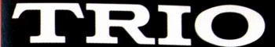
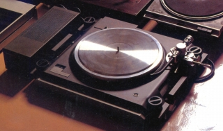
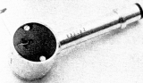
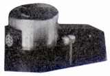
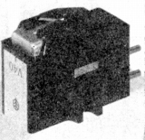
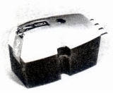
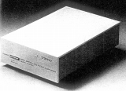

TRIO（トリオ）/KENWOOD（ ケンウッド）
1946年に「春日無線電機商会」として設立されたオーディオブランド。 設立当初から「TRIO（トリオ）」をブランド名としており、1960年には社名も「トリオ」としている。「KENWOOD（ケンウッド）」は元もとは同社の海外向けブランドだったが、やがて国内の高級品にも使いはじめ、1980年代に同社のメインのブランドとなった。1986年に社名も「ケンウッド」へ変更。2008年、日本ビクターと経営統合し、JVC・ケンウッド・ホールディングスが設立され、現在はその傘下の事業会社である。
オーディオブランドとしては、サンスイ、パイオニアとともに、家電系ブランドに対する専業メーカーの代表のような扱われ方をされていた。設立時の社名が示すように高周波技術を得意とし、チューナーは高く評価された。またアンプやアナログディスクプレイヤーにも定評があった。
アナログディスク関連では1970年代初頭までは、光電型カートリッジを発売するなどしていたが、その後はプレイヤー関連に専念する方向に傾いた。1970年代後半には高級アナログプレイヤーに進出し、ときおりスタビライザーやシェルなどに非常にこった製品を発表している。

(1979年発売のL-07D) KENWOOD
（ケンウッド）の製品を以下のように分類する。（この分類は個人的な意見で、メーカーの分類ではありません）
なお当サイトに掲載した製品は基本的に「トリオ」時代の製品である。
�T.カートリッジ
プレイヤー付属カートリッジを別にすれば、すべて1970年代前半までの製品。
1.光電型カートリッジ


(左 サプリーム20 右 KE-9021)2.MM型

(V-40)3.MC型

(V-45)�U.昇圧トランス・ヘッドアンプ
確認できたのはKHA-50、1機種。自社のアンプのMCカートリッジ対応のためか？

�V.その他
「ケンウッド」がまだ高級機種にしか使われていなかった時代の製品、L-07Dにあわせたと思われるユニークな製品があった。